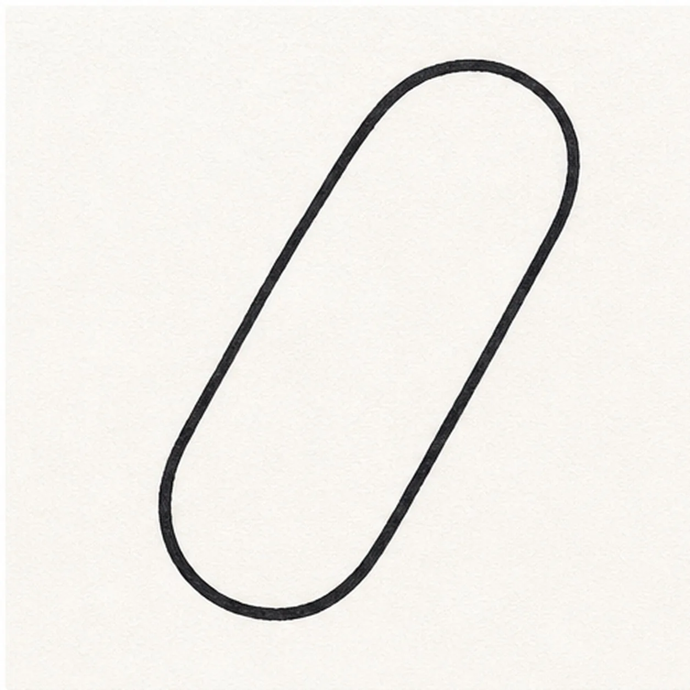
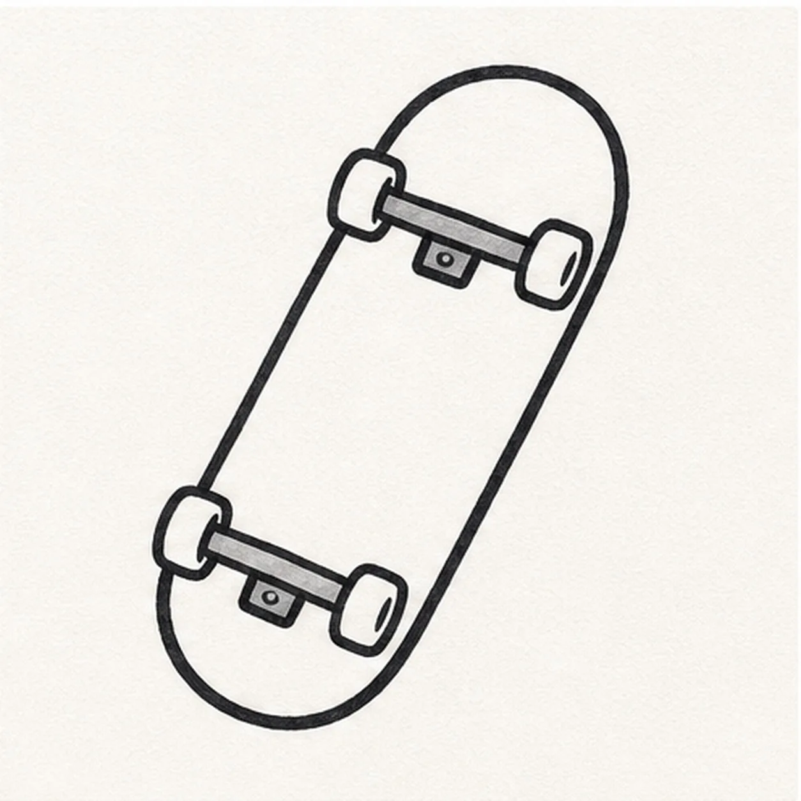
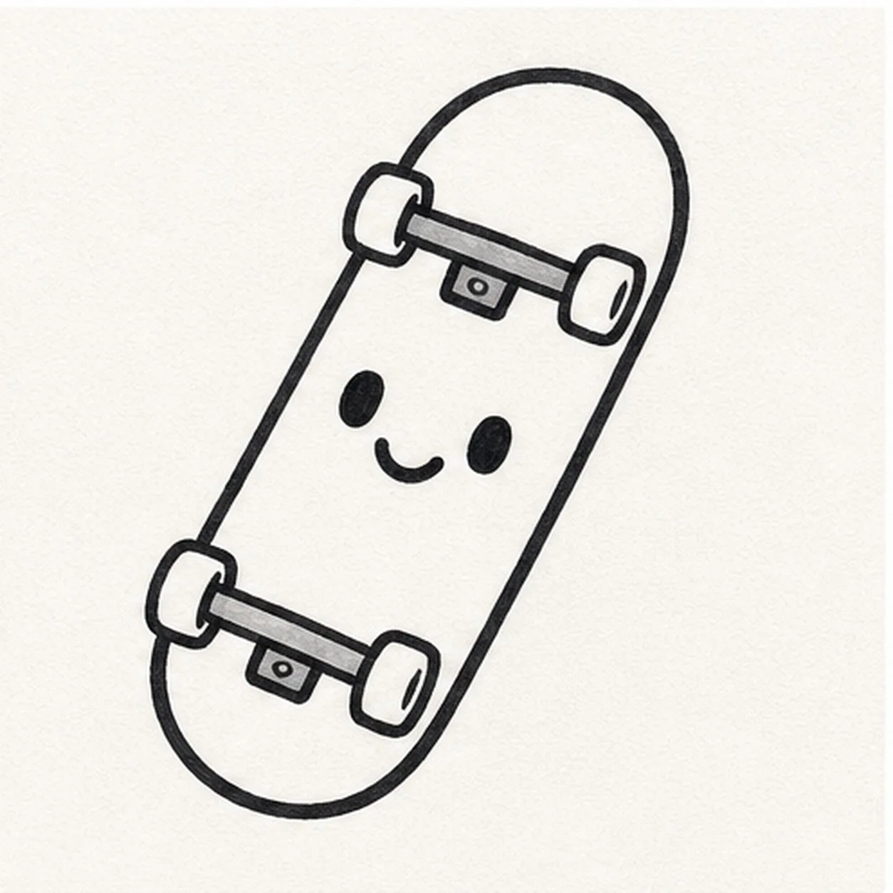
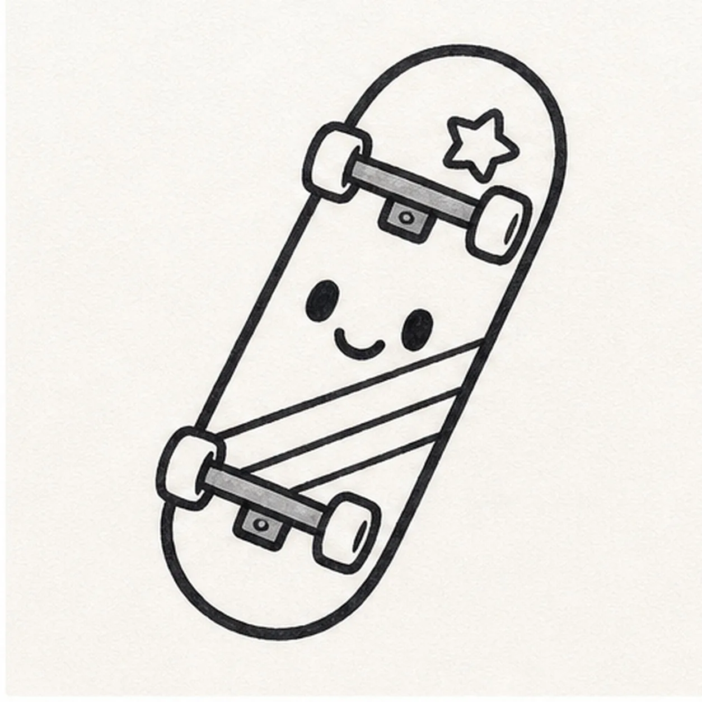
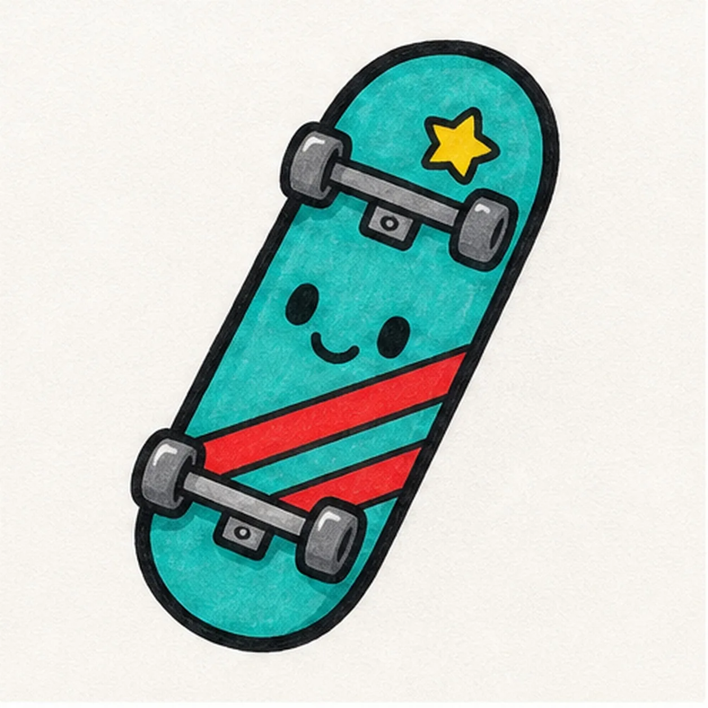

Felt-tip marker mode
Let's doodle a skateboard sticker
Treat this as one playful practice round: sketch the idea loosely, simplify the shapes, then commit with confident marker outlines and bright fills.
-
01

Draw the deck
Draw a long rounded skateboard deck at a slight angle, like a stretched capsule.
Doodle tip: Round both ends generously. That soft sticker shape is easier to outline with marker.
-
02

Add trucks and wheels
Place one truck bar near each end, then add two small wheels on each bar.
Doodle tip: Keep the wheels simple circles or short cylinders. They only need to read clearly at small size.
-
03

Give it a face
Add two oval eyes and a small curved smile in the open middle of the deck.
Doodle tip: Center the face between the trucks so it does not fight with the wheels.
-
04

Place the stickers
Draw one star near the top and two diagonal stripe bands across the lower half of the deck.
Doodle tip: Let the stripes follow the deck angle. Parallel bands feel cleaner than random slashes.
-
05

Fill the marker color
Thicken the black outline, fill the deck teal, color the star yellow, the stripes red, and the wheels and trucks gray.
Doodle tip: Color around the face slowly so the expression stays crisp.
-
06
Add sticker shine
Trace the deck and wheel edges one last time, even out the teal, red, yellow, and gray fills, and add tiny highlights only to shapes you already drew.
Doodle tip: Keep the shine small. A few crisp marks make the skateboard feel like a sticker without adding new decorations.